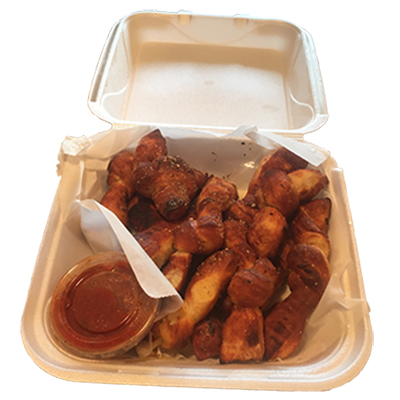

Pepperoni's Garlic Rolls
Alpharetta, GA

These are more like garlic sticks than knots. They taste a bit chewy and seem to be made of leftover pizza crust. You get a lot of them for the price, but they don't really have a wow factor in terms of taste. They come served with marinara sauce on the side.